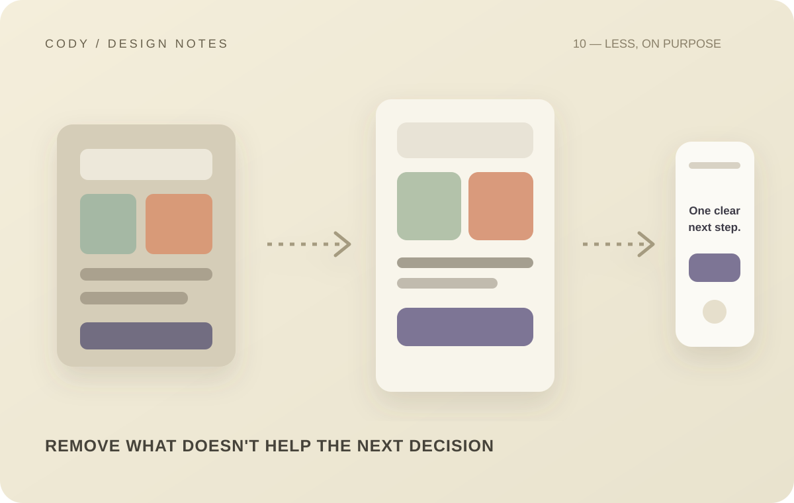

My Approach to Building Interfaces Without Overcomplicating Them
4–5 min read

There is a strange trap in modern interface design: because we can add almost anything, we start believing we should.
Animations, gradients, shadows, floating elements, glass effects, huge typography, complex navigation, decorative illustrations, and endless interactions can all look impressive.
But more UI does not automatically mean better UI.
My approach has gradually become much simpler: make the important things obvious, then remove whatever doesn't help.
Start with hierarchy
Before thinking about decoration, I want to know what the user should notice first.
Every interface has a hierarchy.
A title should not compete with a primary action. A secondary action should not look more important than the primary one. Supporting information should not overpower the main content.
This sounds obvious, but visual hierarchy can disappear surprisingly quickly when too many elements are given equal emphasis.
One of the easiest ways to improve a UI is simply to decide what matters most.
Typography does a lot of the work
Good typography can make an interface feel polished without requiring a lot of decoration.
The typeface matters, but hierarchy matters more.
I think about font size, weight, line height, letter spacing, contrast, width, and spacing between text elements.
A strong heading doesn't need a giant gradient behind it.
A well-designed button doesn't need five visual effects.
The typography and spacing should already establish the relationship.
Spacing is part of the design language
Spacing is one of those things users rarely describe, but they definitely feel.
If everything is too close together, the interface feels crowded.
If everything is too far apart, the interface feels disconnected.
Consistent spacing creates rhythm.
That is why I prefer a defined spacing scale rather than choosing arbitrary values every time.
Once spacing becomes predictable, components start feeling like they belong to the same product.
Color should have a job
I like color, but I don't want every element fighting for attention.
A useful color system should communicate meaning.
Primary colors can indicate important actions. Muted colors can support secondary information. Status colors can communicate success, warning, or error. Background colors can establish hierarchy between sections.
When every component uses a different bright color, the interface becomes noisy.
The solution isn't necessarily less color.
It is more intentional color.
Icons need consistency
Icons are small, but inconsistent icons can make an otherwise polished interface feel unfinished.
I prefer using one primary icon system wherever possible.
The stroke weight, proportions, size, and visual density should feel related.
Icons also need context.
A familiar icon can be helpful when it communicates something quickly.
A decorative icon that adds no meaning can simply become visual noise.
Not every action needs a button
One mistake I have learned to avoid is turning every possible action into a prominent button.
Some actions are primary. Some are secondary. Some belong in a menu. Some are better represented as links. Some should happen automatically.
If everything is a button, nothing feels important.
Good interfaces make prioritization visible.
Motion should explain something
I don't dislike animation.
I dislike animation without a reason.
A transition can communicate that two states are connected. A subtle movement can help explain where an element came from. A loading animation can communicate progress.
But if an animation exists only because the page felt empty without it, I question whether it belongs.
The best motion usually supports the interaction rather than becoming the interaction.
Responsive design is not shrinking
A desktop layout cannot simply be compressed until it fits a phone.
Mobile layouts often need different priorities.
A sidebar might become a bottom sheet. A multi-column grid might become a single column. Secondary information might move lower. Actions might need to become easier to reach with a thumb.
This is not a smaller desktop.
It is the same product adapting to a different environment.
Remove things aggressively
One of my favorite parts of polishing a UI is removing things.
A button that isn't necessary. A label that repeats information. A decorative background that competes with content. A card wrapper that adds no value. A filter that users rarely need.
Removing something often improves the interface more than adding another feature.
That is why I try to treat simplicity as an active design decision.
The goal isn't minimalism for its own sake
There is an important distinction here.
Simple does not mean empty.
Minimalism can become its own kind of overdesign when people remove useful information simply to make an interface look clean.
The goal is not to minimize everything.
The goal is to give everything a reason to exist.
If an element helps users understand, navigate, decide, or act, it earns its place.
If it doesn't, I start questioning it.
That mindset has made my interfaces more focused.
And the more products I build, the more I realize that restraint is not the absence of design.
It is design.